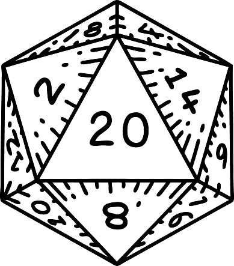

RPG
TRPG
TBRPG
Click HereUm roleplayer é um indivíduo que se envolve em role-playing, que é uma forma de narrativa
ou performance interativa. A dramatização envolve assumir a persona de um personagem,
muitas vezes dentro de um cenário fictício ou de fantasia, e representar
ou improvisar suas ações, pensamentos e diálogos. Roleplayers normalmente participam
de jogos organizados, muitas vezes referidos como uma " campanha de rpg ",
onde eles criam narrativas de forma colaborativa e exploram vários cenários.
Um benefício da interpretação é que ela pode nos dar uma oportunidade de ter uma expressão criativa e aguça a imaginação. A interpretação pode permitir que os indivíduos explorem diferentes personas, mundos e histórias, proporcionando uma fuga da vida cotidiana. Além disso, a interpretação pode ser uma excelente maneira de se conectar com outras pessoas que compartilham interesses e paixões semelhantes, formando comunidades e amizades que podem durar a vida toda.
https://www.dicebreaker.com/categories/roleplaying-game/feature/rpgs-as-therapy-support-workers
https://www.wired.com/story/therapists-dungeons-dragons-tabletop-games-helping-people/
https://intraspectrum-chicago.com/use-of-role-playing-games-rpgs-in-therapy/
https://www.masterclass.com/articles/what-is-an-rpg
https://www.socialsongbird.com/2016/01/roleplaying-social-media-sensation.html
https://www.wikihow.com/Become-a-Facebook-Roleplayer
https://www.wikihow.com/Roleplay#:~:text=There%20are%20three%20main%20types,%2C%20acting%2C%20and%20occasionally%20combat.
https://loveroleplay.fandom.com/wiki/Kinds_and_Types_of_Roleplays
https://www.deviantart.com/dummysguideforrp/art/Basics-RP-Types-172742484